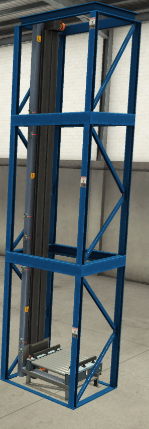
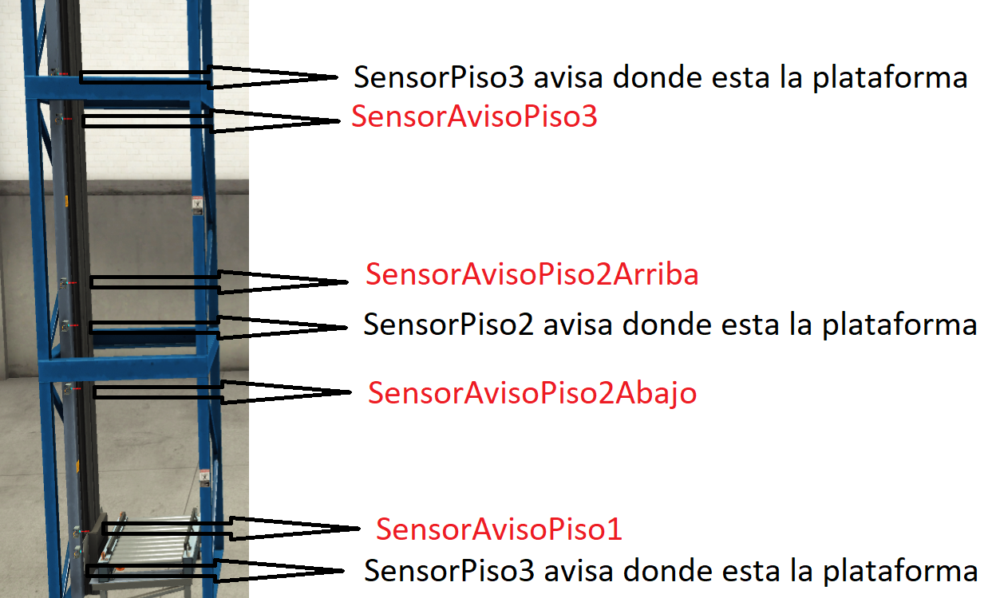
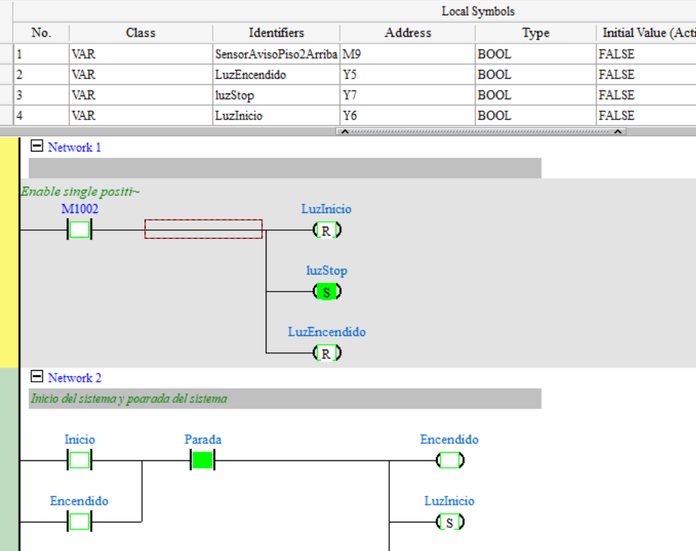

Aálisis de caso: Montacarga industrial de 3 pisos
| Asignatura / módulo | Automatización industrial / PLC |
| Aprendizaje esperado | Realiza, edita y monitorea programas básicos en controladores programables |
| PLC | Delta SX2, programado en ISPSoft |
| Simulación | Factory I/O enlazado mediante KepServer |
| Duración | 2 sesiones de trabajo |
| Producto final | Programa Ladder funcional, tabla de análisis y verificación en simulación |
1. Objetivos de aprendizaje
Al finalizar la actividad, el estudiante será capaz de analizar un sistema de montacarga industrial, modelar su funcionamiento lógico y construir un programa en lenguaje Ladder usando ISPSoft, respetando un mapa de entradas y salidas definido.
- Interpretar el funcionamiento de sensores de piso y sensores de aviso asociados a la inercia mecánica del motor.
- Diseñar la lógica de movimiento hacia arriba y hacia abajo según piso solicitado y posición actual.
- Aplicar enclavamientos básicos para evitar órdenes simultáneas incompatibles.
- Probar el programa en Factory I/O y registrar evidencias de funcionamiento.
2. Contexto del caso
Una empresa utiliza un montacarga industrial de tres pisos para trasladar carga entre niveles. La plataforma se mueve mediante un motor con dos sentidos de giro: subida y bajada. Debido a la inercia del sistema, el motor no se detiene exactamente en el instante en que se desactiva la salida. Por esta razón, se incorporan sensores de aviso antes de cada piso para anticipar la detención.
El sistema será programado en ISPSoft para un PLC Delta SX2. La prueba se realizará en Factory I/O. La configuración de KepServer y del simulador será entregada lista; el foco de esta guía es el análisis lógico y la programación Ladder.

3. Mapeo obligatorio de señales
El programa debe respetar estrictamente el siguiente mapeo. No cambie nombres ni recursos, porque la simulación ya está enlazada con estas direcciones.
| Nombre | Recurso | Función |
|---|---|---|
| Piso1 | M0 | Solicitud de movimiento hacia piso 1 |
| Piso2 | M1 | Solicitud de movimiento hacia piso 2 |
| Piso3 | M2 | Solicitud de movimiento hacia piso 3 |
| SensorPiso1 | M3 | Plataforma ubicada en piso 1 |
| SensorPiso2 | M4 | Plataforma ubicada en piso 2 |
| SensorPiso3 | M5 | Plataforma ubicada en piso 3 |
| SensorAvisoPiso1 | M6 | Aviso anticipado para detener al llegar a piso 1 desde arriba |
| SensorAvisoPiso2Abajo | M7 | Aviso anticipado para detener al llegar a piso 2 desde abajo |
| SensorAvisoPiso3 | M8 | Aviso anticipado para detener al llegar a piso 3 desde abajo |
| SensorAvisoPiso2Arriba | M9 | Aviso anticipado para detener al llegar a piso 2 desde arriba |
| Inicio | M20 | Habilitación de marcha del sistema |
| Parada | M21 | Parada del sistema |
| Encendido | M22 | Estado general de sistema energizado/habilitado |
| AscensorArriba | Y0 | Salida para subir la plataforma |
| AscensorAbajo | Y1 | Salida para bajar la plataforma |
| LuzPiso1 | Y2 | Indicador de piso 1 |
| LuzPiso2 | Y3 | Indicador de piso 2 |
| LuzPiso3 | Y4 | Indicador de piso 3 |
| LuzEncendido | Y5 | Indicador de sistema encendido |
| LuzInicio | Y6 | Indicador de orden de inicio |
| LuzStop | Y7 | Indicador de parada |
4. Análisis técnico del sistema
El montacarga tiene tres sensores principales de posición: SensorPiso1, SensorPiso2 y SensorPiso3. Estos indican la posición final de la plataforma. Además, existen sensores de aviso que permiten detener antes el motor para compensar la inercia.
- Para llegar al piso 1, la plataforma solo puede venir desde arriba. Por eso el SensorAvisoPiso1 está ubicado sobre el SensorPiso1.
- Para llegar al piso 3, la plataforma solo puede venir desde abajo. Por eso el SensorAvisoPiso3 está ubicado bajo el SensorPiso3.
- Para llegar al piso 2, la plataforma puede venir desde abajo o desde arriba. Por eso existen dos sensores de aviso: SensorAvisoPiso2Abajo y SensorAvisoPiso2Arriba.

5. Reglas mínimas de funcionamiento
- El sistema debe encenderse mediante Inicio y detenerse mediante Parada.
- Cuando el sistema está habilitado, debe activarse LuzEncendido.
- La solicitud Piso1, Piso2 o Piso3 debe generar movimiento solo si la plataforma no está ya en el piso solicitado.
- Si el destino está sobre la posición actual, debe activarse AscensorArriba.
- Si el destino está bajo la posición actual, debe activarse AscensorAbajo.
- El motor debe detenerse al detectar el sensor de aviso correspondiente al sentido de llegada.
- Al quedar en un piso, debe encenderse la luz del piso correspondiente.
- La lógica debe impedir subida y bajada simultánea.
6. Sesión 1: análisis y modelado en papel
6.1 Identificación de estados
Complete la tabla antes de programar. Use lenguaje claro y operativo.
| Estado del sistema | Condición de entrada | Salida esperada | Condición de término |
|---|---|---|---|
| Detenido / sin habilitación | |||
| En piso 1 | |||
| En piso 2 | |||
| En piso 3 | |||
| Subiendo | |||
| Bajando |
6.2 Tabla de decisión de movimiento
| Posición actual | Destino solicitado | Sentido de movimiento | Sensor de aviso que debe detener |
|---|---|---|---|
| Piso 1 | Piso 2 | ||
| Piso 1 | Piso 3 | ||
| Piso 2 | Piso 1 | ||
| Piso 2 | Piso 3 | ||
| Piso 3 | Piso 1 | ||
| Piso 3 | Piso 2 |
6.3 Modelo Ladder en papel
Antes de abrir ISPSoft, dibuje en papel la estructura del programa. Debe incluir, al menos, los siguientes bloques:
- Enclavamiento de inicio/parada.
- Memoria de destino o condición equivalente.
- Lógica de subida.
- Lógica de bajada.
- Condiciones de detención por sensores de aviso.
- Luces de piso y luces de estado.
7. Sesión 2: programación y prueba en simulación
En esta sesión el estudiante implementa el programa en ISPSoft, lo descarga al PLC Delta SX2 simulado y verifica el funcionamiento en Factory I/O. Los archivos de KepServer y Factory I/O serán entregados ya configurados.

7.1 Pruebas obligatorias
| Prueba | Acción | Resultado esperado | Resultado observado |
|---|---|---|---|
| 1 | Iniciar sistema | LuzEncendido y LuzInicio activas según lógica definida | |
| 2 | Desde piso 1 solicitar piso 2 | Sube y se detiene con SensorAvisoPiso2Abajo | |
| 3 | Desde piso 2 solicitar piso 3 | Sube y se detiene con SensorAvisoPiso3 | |
| 4 | Desde piso 3 solicitar piso 2 | Baja y se detiene con SensorAvisoPiso2Arriba | |
| 5 | Desde piso 2 solicitar piso 1 | Baja y se detiene con SensorAvisoPiso1 | |
| 6 | Solicitar el mismo piso actual | No debe activarse el motor | |
| 7 | Presionar Parada durante movimiento | Se desactiva el movimiento y se indica parada | |
| 8 | Revisar Y0 e Y1 | Nunca deben estar activas simultáneamente |
7.2 Evidencia en video
Registre una prueba de funcionamiento donde se vea el movimiento entre pisos, las luces y la detención anticipada por sensores de aviso. El video recomendado es formato MP4, codificación H.264, resolución 720p o 1080p. Nombre sugerido: video_prueba.mp4.
8. Entregables
- Programa Ladder realizado en ISPSoft, usando el mapeo definido.
- Hoja de análisis de la sesión 1 completada.
- Tabla de pruebas de la sesión 2 completada.
- Capturas de pantalla del programa o de la simulación.
- Video breve de funcionamiento en formato MP4 H.264.
9. Preguntas de profundización
- ¿Por qué no es suficiente detener el motor usando solamente SensorPiso1, SensorPiso2 y SensorPiso3?
- ¿Qué falla podría ocurrir si no se usa un enclavamiento entre AscensorArriba y AscensorAbajo?
- ¿Por qué el piso 2 necesita dos sensores de aviso y los pisos 1 y 3 solo uno?
- ¿Qué pasaría si el montacarga recibe una nueva solicitud mientras está en movimiento?
- ¿Cómo modificaría el programa para agregar prioridad, cola de llamados o memoria de destino?
- ¿Qué diferencias existirían entre esta simulación y una puesta en marcha real con motor, contactores y finales de carrera?
10. Autoevaluación del estudiante
| ✓ | Criterio | Comentario breve |
|---|---|---|
| Respeté todos los nombres y recursos del mapa de señales. | ||
| Realicé el análisis en papel antes de programar. | ||
| La lógica de subida y bajada funciona según el destino solicitado. | ||
| El programa detiene el motor usando sensores de aviso. | ||
| Y0 e Y1 nunca se activan simultáneamente. | ||
| Registré evidencias de prueba en Factory I/O. | ||
| Puedo explicar la función de cada sensor de aviso. |
11. Evaluación del profesor
| Criterio | Logrado 3 pts | Medianamente logrado 2 pts | Por lograr 1 pt | Puntaje |
|---|---|---|---|---|
| Análisis del caso | Identifica posición, destino, sentido y sensores de aviso. | Identifica la mayoría de las condiciones, con errores menores. | El análisis es incompleto o no permite programar. | |
| Uso del mapeo | Respeta completamente nombres y recursos. | Presenta errores menores corregibles. | Cambia direcciones o nombres críticos. | |
| Lógica Ladder | El programa controla subida, bajada y detención correctamente. | Funciona parcialmente o requiere ajustes. | No logra controlar el ciclo principal. | |
| Seguridad lógica | Impide activación simultánea de Y0 e Y1. | El enclavamiento existe, pero es débil o incompleto. | No existe control contra salidas incompatibles. | |
| Prueba en simulación | Verifica todos los casos y registra evidencias. | Verifica algunos casos. | No demuestra funcionamiento suficiente. | |
| Explicación técnica | Explica con claridad el efecto de la inercia y los sensores de aviso. | Explica parcialmente el fenómeno. | No justifica técnicamente la solución. | |
| Puntaje total | ||||